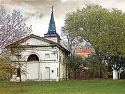
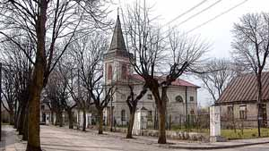
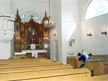
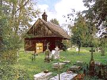
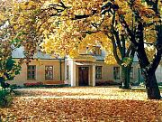
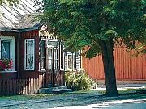
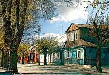

The following are pictures from the Wengrow Parish. Click on the thumbnail view for an enlarged view of the picture.
Unless otherwise noted below, the photos are from the Lutheran Evangelical (Polish) website and we gratefully acknowledge permission to use same from the webmaster, Jan Szturc, and the photographer, Michal Kurc. More work by Mr. Kurc can be seen on his website. Further thanks to Pawel Koziarek for translation of the captions, allowing us to identify the photos for you.
|  | Evangelical Church of the Holy Trinity (Lutheran) dating from about 1838. | |
|  | ||
| Interior view of the church. |  | |
|  | View of cemetery chapel. This German cemetery apparently dates back to 1679 when believers arrived in the area from the Warsaw region. | |
| Sarepta Home for Seniors, formerly under the jurisdiction of the Lutheran Church. |  | |
| Old wooden buildings on Narutowicza Street (formerly German Street) in the old German district of Wengrow. | ||
|  |  | |
{kind=link}
{kind=link}
{kind=link}
{kind=link}
{kind=link}
{kind=link}
{kind=link}